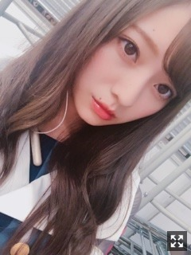
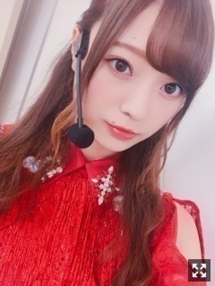
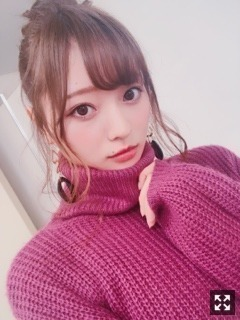
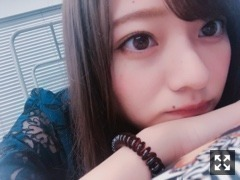

好きなことを好きなだけ
みなさまこんにちは！！
乃木坂46 の
梅澤美波です！！

２１枚目の制服、
すごく好き☺︎
今年のコートは
どんなの買おうかな〜って
ずっと迷ってまして
やっぱ黒が使いやすいかな〜
って思いつつも
赤が欲しくて仕方がなくって
今日お仕事の合間にお買い物して
赤のコートゲットしたぜ☺︎
早いかな〜と思いつつも
お店には冬物ばかりで
もうそんな季節か〜と
ニット早く着たいな〜
冬服っていいですよね☺︎
９／１７ GirlsAward
出演させて頂きました！！
乃木坂46としてのパフォーマンスは
トップバッターでした！
女の子がすごく多くて
可愛い歓声を聴きながら
パフォーマンスするのが幸せで☺︎
インフルエンサー
ジコチューで行こう！
夏のFree&easy
シンクロニシティ
の４曲パフォーマンスさせて頂きました！
楽しかったなあ〜

生写真の時は着たけど
この衣装で初めてパフォーマンスしましたっ
髪型はハーフアップ〜
そしてランウェイ！
GRLさんのステージを
歩かせていただきました！
リハーサルからガクガクでした
それが本当に良かった(；；)
不安とか緊張とか
言葉で表せる感情でしかなくて
本番前の私の感情は
うまく言い表せない気持ちだったのですが、、
私が普通の女の子だった時から
モデルさんが、お洋服が大好きで
ガルアワやTGCを何度も観に行っていて
だから、１７日の朝は
今日、夢に描いてたことが
叶う日なんだな〜って、
朝起きて一番にぼーっと天井を見ながら思ったの
楽しかった！
緊張したし反省点ばかり浮かんでくるけど！
未熟すぎて本当にまだまだだなって
そう思ったけど！
楽しかった！
それが一番の収穫だと思います！
女の子達のうちわもタオルも
私の事好きでいてくれてる人いるかなって
すごくすごく不安だったけど
ステージ立ったらそんなの消えて
全部全部見えていたし
色んなところから名前呼ぶ声が聞こえて
嬉しくって仕方なかったです
女の子が沢山のイベントだから
きっと来るの勇気いったろうに
いつも応援して下さる男性のファンの方が
たくさんいたのもちゃんと見えてました、
きっと推しの夢が叶う日だって
すごい勇気出して
来てくれたのかな〜なんて思ったら
私こんなとこで止まってられないなって思ったよ
本当に本当に心強かった！
ありがとうございます！

もっともっと頑張りたいです
頑張ります！
それと、
らじらー！お聴きくださった皆様
ありがとうございました！
仙台での公開生放送以来！
スタジオでは初！
すごく緊張しちゃって
面白いこと言えなかったけど、、
すごく楽しめました！！
星野さんとWみなみでのトークも
オリラジさんとのお喋りも
すごく楽しかった！たくさん笑いました！
来週もお邪魔することになりました！
井上さんと蘭世さんと！
セーラームーンチーム！
わあ〜今から楽しみっ
頑張りますっ！
よだ〜
仙台のとき！
本当に可愛くて仕方ない
このこ、ずっと家にいてほしい
癒し、かわいい本当に
そして昨日は！
ミュージックステーションウルトラFES！
シンクロニシティからの出演でしたが
久保ちゃんのポジションで
パフォーマンスさせて頂きました！
ヴァイオリンの
生演奏の中でのパフォーマンス。
貴重な経験でした！
ありがとうございました☺︎
よく一人で散歩するのに
金木犀がまだ香ってこなくて
恋しくて仕方なくて
金木犀の香り物を買いました☺︎
とっても落ち着く香りがします〜
早く香ってこないかな〜
女の子たちコメントありがとうっ☺︎
まとめて書いていくので
しばしお待ちをっ！！
最近全然撮ってなくて(；；)
撮ったらまた載せますっ∠( ˙-˙ )／
それでは今日はここまで！
もうすぐセラミュ！
劇場入りします！
がんばるぞ〜！

おやすみなさい
毎日楽しんでいきたいですねっ
言霊ってあると思うんです、だからとどめておくのも大切だなあと
笑っていたい、ずっと☺︎
Original：https://www.nogizaka46.com/s/n46/diary/detail/47033?ima=4951&cd=MEMBER